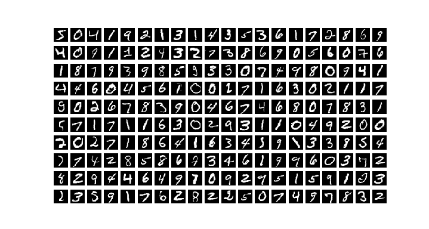
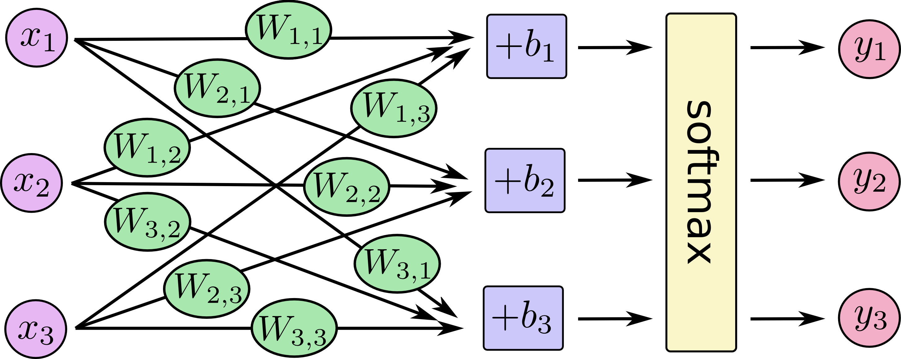
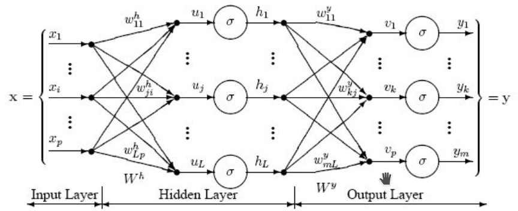
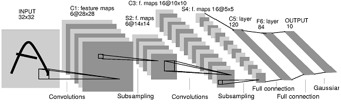

Deep Learning avec Keras¶
L’objectif de cette première partie de travaux pratiques est de prendre en main la librairie Keras https://keras.io/ pour utiliser et entraîner des réseaux de neurones profonds.
Exercice 0 : Chargement des données¶
On va travailler avec la base de données image MNIST, constituée d’images de caractères manuscrits (60000 images en apprentissage, 10000 en test).
Voici un bout de code pour récupérer les données :
from keras.datasets import mnist # the data, shuffled and split between train and test sets (X_train, y_train), (X_test, y_test) = mnist.load_data() X_train = X_train.reshape(60000, 784) X_test = X_test.reshape(10000, 784) X_train = X_train.astype('float32') X_test = X_test.astype('float32') X_train /= 255 X_test /= 255 print(X_train.shape[0], 'train samples') print(X_test.shape[0], 'test samples')
- On va commencer par afficher les 200 premières images de la base d’apprentissage.
Écrire un script
exo0.pyqui va récupérer les données avec le code précédentCompléter
exo0.pypour permettre l’affichage demandé en utilisant le code suivant :
import matplotlib as mpl import matplotlib.pyplot as plt plt.figure(figsize=(7.195, 3.841), dpi=100) for i in range(200): plt.subplot(10,20,i+1) plt.imshow(X_train[i,:].reshape([28,28]), cmap='gray') plt.axis('off') plt.show()
Le script exo0.py doit produire l’affichage ci-dessous :
{kind=link}

Question :
Quel est l’espace dans lequel se trouvent les images ? Quel est sa taille ?
Exercice 1 : Régression logistique¶
On va d’abord commencer par créer un modèle de classification linéaire populaire, la régression logistique.
Modèle de prédiction¶
Ce modèle correspond à un réseau de neurones à une seule couche, qui va projeter le vecteur d’entrée \(\mathbf{x_i}\) pour une image MNIST
(taille \(28^2=784\)) avec un vecteur de de paramètres \(\mathbf{w_{c}}\) pour chaque classe (plus un biais \(b_c\)).
Pour correspondre à la matrice des données de l’exercice précédent, on considère que chaque exemple \(\mathbf{x_i}\) est un vecteur ligne - taille (1,784).
En regroupant l’ensemble des jeux de paramètres \(\mathbf{w_{c}}\) pour les 10 classes dans une matrice \(\mathbf{W}\) (taille \(784\times 10\)),
et les biais dans un vecteur \(\mathbf{b}\), on obtient un vecteur
\(\mathbf{\hat{s_i}} =\mathbf{x_i} \mathbf{W} + \mathbf{b}\) de taille (1,10).
Une fonction d’activation de type soft-max sur \(\mathbf{\hat{y_i}} =\) softmax \((\mathbf{s_i})\) permet d’obtenir le vecteur de sortie prédit par le modèle \(\mathbf{\hat{y_i}}\) - de taille (1,10) - qui représente la probabilité a posteriori
\(p(\mathbf{\hat{y_i}} | \mathbf{x_i})\) pour chacune des 10 classes:
Le schéma ci-dessous illustre le modèle de régression logistique avec un réseau de neurones.
{kind=link}

Question :
Quel est le nombre de paramètres du modèle ? Justifier le calcul.
Avec Keras, les réseaux de neurones avec une structure de chaîne (réseaux « feedforward »), s’utilisent de la manière suivante:
from keras.models import Sequential
model = Sequential()
On créé ainsi un réseau de neurones vide. On peut alors ajouter des couches avec la fonction add.
Par exemple, l’ajout d’une couche de projection linéaire (couche complètement connectée) de taille 10, suivi de l’ajout d’une couche d’activation de type softmax, peuvent s’effectuer de la manière suivante:
from keras.layers import Dense, Activation
model.add(Dense(10, input_dim=784, name='fc1'))
model.add(Activation('softmax'))
On peut ensuite visualiser l’architecture du réseau avec la méthode summary() du modèle.
Question :
Écrire un script
exo1.pypermettant de créer le réseau de neurone ci-dessus.Vérifier le nombre de paramètres du réseau à apprendre dans la méthode
summary().
Formulation du problème d’apprentissage¶
Afin d’entraîner le réseau de neurones, on va comparer, pour chaque exemple d’apprentissage, la sortie prédite \(\mathbf{\hat{y_i}}\) par le réseau - équation (1) - pour l’image \(\mathbf{x_i}\), avec la sortie réelle \(\mathbf{y_i^*}\) issue de la supervision qui correspond à la catégorie de l’image \(\mathbf{x_i}\): on utilisera en encodage de type « one-hot » pour \(\mathbf{y_i^*}\), i.e. :
On utilisera le code suivant pour générer des labels au format 0-1 encoding - équation (2).
from keras.utils import np_utils
K=10
# convert class vectors to binary class matrices
Y_train = np_utils.to_categorical(y_train, K)
Y_test = np_utils.to_categorical(y_test, K)
Pour mesurer l’erreur de prédiction, on utilisera une fonction de coût de type entropie croisée (« cross-entropy ») entre \(\mathbf{\hat{y_i}}\) et \(\mathbf{y_i^*}\) : \(\mathcal{L}(\mathbf{\hat{y_i}}, \mathbf{y_i^*}) = -\sum\limits_{c=1}^{10} y_{c,i}^* log(\hat{y}_{c,i}) = - log(\hat{y}_{c^*,i})\), où \(c^*\) correspond à l’indice de la classe donné par la supervision pour l’image \(\mathbf{x_i}\).
La fonction de coût finale consistera à moyenner l’entropie croisée sur l’ensemble de la base d’apprentissage \(\mathcal{D}\) constituée de \(N=60000\) images :
Question :
La fonction de coût de l’Eq. (3) est-elle convexe par rapports aux paramètres \(\mathbf{W}\), \(\mathbf{b}\) du modèle ? Avec un pas de gradient bien choisi, peut-on assurer la convergence vers le minimum global de la solution ?
Apprentissage du modèle¶
Afin d’optimiser les paramètres \(\mathbf{W}\) et \(\mathbf{b}\) pour minimiser l’équation (3) pour notre modèle de régression logistique, nous allons utiliser l’algorithme de rétro-propagation de l’erreur du gradient.
Avec Keras, la rétro-propagation de l’erreur est implémentée nativement. On va compiler le modèle en lui passant un loss (ici l” entropie croisée), une méthode d’optimisation (ici une descente de gradient stochastique, stochatic gradient descent, sgd),
et une métrique d’évaluation (ici le taux de bonne prédiction des catégories, accuracy) :
from keras.optimizers import SGD
learning_rate = 0.5
sgd = SGD(learning_rate)
model.compile(loss='categorical_crossentropy',optimizer=sgd,metrics=['accuracy'])
Enfin, l’apprentissage du modèle sur des données d’apprentissage est mis en place avec la méthode fit :
batch_size = 100
nb_epoch = 10
model.fit(X_train, Y_train,batch_size=batch_size, epochs=nb_epoch,verbose=1)
batch_size correspond au nombre d’exemples utilisé pour estimer le gradient de la fonction de coût.
epochs est le nombre d’époques (i.e. passages sur l’ensemble des exemples de la base d’apprentissage) lors de la descente de gradient.
On peut ensuite évaluer les performances du modèle dur l’ensemble de test avec la fonction evaluate
scores = model.evaluate(X_test, Y_test, verbose=0)
print("%s: %.2f%%" % (model.metrics_names[0], scores[0]*100))
print("%s: %.2f%%" % (model.metrics_names[1], scores[1]*100))
Le premier élément de score renvoie la fonction de coût sur la base de test, le second élément renvoie le taux de bonne détection (accuracy).
Implémenter l’apprentissage du modèle sur la base de train de la base MNIST.
Évaluer les performances du réseau sur la base de test. Vous devez obtenir un score de l’ordre de 92% sur la base de test pour ce modèle de régression logistique.
Exercice 2 : Perceptron multi-couches (MLP)¶
L’objectif de ce second exercice est d’étendre le modèle de régression logistique afin de mettre en place des modèles de prédictions plus riches. En particulier, on va s’intéresser aux Perceptron multi-couches (Multi-Layer Percpetron, MLP). Contrairement à la régression logistique qui se limite à des séparateurs linéaires, le Perceptron permet l’apprentissage de frontières de décisions non linéaires, et constituent des approximateurs universels de fonctions.
L’objectif de la séance de travaux pratiques est de mettre en place le code pour effectuer des prédictions et entraîner un Perceptron à une couche cachée.
Modèle de prédiction¶
L’architecture du perpcetron à une couche cachée est montrée à la figure ci-dessous.
{kind=link}

Si on considère les données de la base MNIST, chaque image est représentée par un vecteur de taille \(28^2=784\). Le perceptron va effecteur les différentes étape de transformation pour produire la prédiction finale, i.e. la catégorie sémantique de l’image :
Une étape de projection linéaire, qui va projeter chaque image sur un vecteur de taille \((1,L)\), e.g. \(L=100\). En considérant chaque exemple \(\mathbf{x_i}\) est un vecteur ligne - taille \((1,784)\) - la projection linéaire peut être représentée par la matrice \(\mathbf{W^h}\) (taille \((784, L)\)), et le vecteur de biais \(\mathbf{b^h}\) (taille \((1, L)\)) : \(\mathbf{\hat{u_i}} =\mathbf{x_i} \mathbf{W^h} + \mathbf{b^h}\).
Une étape de non linéarité, e.g. de type sigmoïde : \(\forall j \in \left\lbrace 1; L \right\rbrace ~ h_{i,j} = \frac{1}{1+exp(-u_{i,j})}\)
Une seconde étape de projection linéaire, qui va projeter le vecteur latent de taille \((1,L)\) sur un vecteur de taille \((1,K)=10\) (nombre de classes). Cette opération de projection linéaire sera représentée par la matrice \(\mathbf{W^y}\) (taille \((L, K)\)), et le vecteur de biais \(\mathbf{b^y}\) (taille \((1, K)\)) : \(\mathbf{\hat{v_i}} =\mathbf{h_i} \mathbf{W^y} + \mathbf{b^y}\).
Une étape de non linéarité de type soft-max vue la semaine précédente pour la régression logistique : \(\forall j \in \left\lbrace 1; K \right\rbrace ~ y_{i,j} = \frac{exp(v_{i,j})}{\sum\limits_{i=1}^K exp(v_{i,k})}\)
Question :
On va utiliser 100 neurones dans la couche cachée du nouveau réseau. Quel est maintenant le nombre de paramètres du modèle MLP ? Justifier le calcul.
Ecrire un script
exo2.pyqui va enrichir le modèle de régression logistique de l’exercice précédent afin de créer le réseau MLP. Vérifier le nombre de paramètres du modèle avec la méthodesummary().
Sur un réseau séquentiel vide, on va ajouter la méthode
addpour insérer une couche cachée (de taille 100):
model = Sequential()
model.add(Dense(100, input_dim=784, name='fc1'))
La non-linéarité de type sigmoïde sera obtenue de la manière suivante :
model.add(Activation('sigmoid'))
Apprentissage du modèle¶
Une fois le modèle MLP créé, la façon de l’entraîner va être strictement identique à ce qui a été écrit dans l’exercice 1 précédent. En effet, on peut calculer l’erreur - entropie croisée décrite à l’équation (3) - pour chaque exemple d’apprentissage à partir de la sortie prédite \(\mathbf{\hat{y_i}}\) et de la supervision \(\mathbf{y_i^*}\). L’algorithme de rétro-propagation du gradient de cette erreur permet alors de mettre à jour l’ensemble des paramètres du réseau.
Question :
Compléter le script
exo2.pyafin d’effectuer l’entraînement du réseau MLP. On choisira 50 époques pour l’apprentissage.Avec ce modèle MLP à une couche cachée, la fonction de coût de l’Eq. (3) est-elle convexe par rapports aux paramètres du modèle ? Avec un pas de gradient bien choisi, peut-on assurer la convergence vers le minimum global de la solution ?
Observer la documentation
Keraspour voir la façon dont les paramètres du modèles sont initialisés dans les différentes couches.Évaluer les performances du réseau sur la base de test. Vous devez obtenir un score de l’ordre de 98% pour ce modèle MLP.
On pourra utiliser la méthode suivante pour sauvegarder le modèle appris :
from keras.models import model_from_yaml
def saveModel(model, savename):
# serialize model to YAML
model_yaml = model.to_yaml()
with open(savename+".yaml", "w") as yaml_file:
yaml_file.write(model_yaml)
print("Yaml Model ",savename,".yaml saved to disk")
# serialize weights to HDF5
model.save_weights(savename+".h5")
print("Weights ",savename,".h5 saved to disk")
Exercice 3 : Réseau de neurones convolutif¶
On va maintenant étendre le perceptron de l’exercice précédent pour mettre en place un réseau de neurones convolutif profond, « Convolutionnal Neural Networks », ConvNets.
Écrire un script ``exo3.py`` pour mettre en place un ConvNet.
Les réseaux convolutifs manipulent des images multi-dimensionnelles en entrée (tenseurs). On va donc commencer par reformater les données d’entrée afin que chaque exemple soit de taille \(28 \times 28 \times 1\).
X_train = X_train.reshape(X_train.shape[0], 28, 28, 1)
X_test = X_test.reshape(X_test.shape[0], 28, 28, 1)
input_shape = (28, 28, 1)
Par rapport aux réseaux complètement connectés, les réseaux convolutifs utilisent les briques élémentaires suivantes :
1. Des couches de convolution, qui transforment un tenseur d’entrée de taille \(n_x \times n_y \times p\) en un tenseur de sortie \(n_{x'} \times n_{y'} \times n_H\), où \(n_H\) est le nombre de filtres choisi. Par exemple, une couche de convolution pour traiter les images d’entrée de MNIST peut être créée de la manière suivante :
from keras.models import Sequential
from keras.layers import Dense, Flatten
from keras.layers import Conv2D, MaxPooling2D
Conv2D(32,kernel_size=(5, 5),activation='relu',input_shape=(28, 28, 1),padding='valid')
32 est le nombre de filtres.
(5, 5) est la taille spatiale de chaque filtre (masque de convolution).
padding=”valid” correspond ignorer les bords lors du calcul (et donc à diminuer la taille spatiale en sortie de la convolution).
N.B. : on peut directement inclure dans la couche de convolution la non-linéarité en sortie de la convolution, comme illustré ici dans l’exemple avec une fonction d’activation de type
relu.
Des couches d’agrégation spatiale (pooling), afin de permettre une invariance aux translations locales. Voici par exemple la manière de déclarer une couche de max-pooling:
pool = MaxPooling2D(pool_size=(2, 2))
(2, 2) est la taille spatiale sur laquelle l’opération d’agrégation est effectuée.
N.B. : par défaut, le pooling est effectué avec un décalage de 2 neurones, dans l’exemple précédent on obtient donc des cartes de sorties avec des tailles spatiales divisées par deux par rapport à la taille d’entrée.
- Compléter le script
exo3.pypour mettre en place un ConvNet à l’architecture suivante, proche du modèle historique LeNet5 [LBD+89] et montré ci-dessous: Une couche de convolution avec 16 filtres de taille \(5 \times 5\), suivie d’une non linéarité de type relu puis d’une couche de max pooling de taille \(2 \times 2\).
Une seconde couche de convolution avec 32 filtres de taille \(5 \times 5\), suivie d’une non linéarité de type relu puis d’une couche de max pooling de taille \(2 \times 2\).
Comme dans le réseau LeNet, on considérera la sortie du second bloc convolutif comme un vecteur, ce que revient à « mettre à plat » les couches convolutives précédentes (
model.add(Flatten())).Une couche complètement connectée de taille 100, suivie d’une non linéarité de type sigmoïde.
Une couche complètement connectée de taille 10, suivie d’une non linéarité de type softmax.
{kind=link}

Apprendre le modèle et évaluer les performances du réseau sur la base de test. Vous devez obtenir un score de l’ordre de 99% pour ce modèle ConvNet.
On pourra sauvegarder le modèle appris avec la méthode
saveModelprécédente
Apprentissage sur GPU
Quelle est le temps d’une époque avec ce modèle convolutif ?
Vous pourrez tester l’apprentissage sur carte graphique du modèle, et comparer le temps d’entraînement
- LBD+89
Yann LeCun, Bernhard Boser, John S Denker, Donnie Henderson, Richard E Howard, Wayne Hubbard, and Lawrence D Jackel. Backpropagation applied to handwritten zip code recognition. Neural computation, 1(4):541–551, 1989.